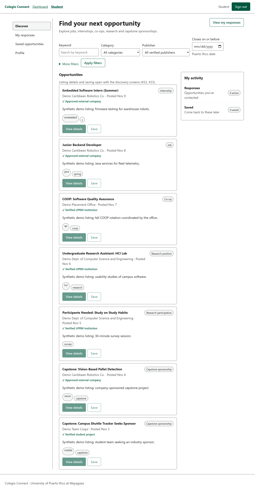
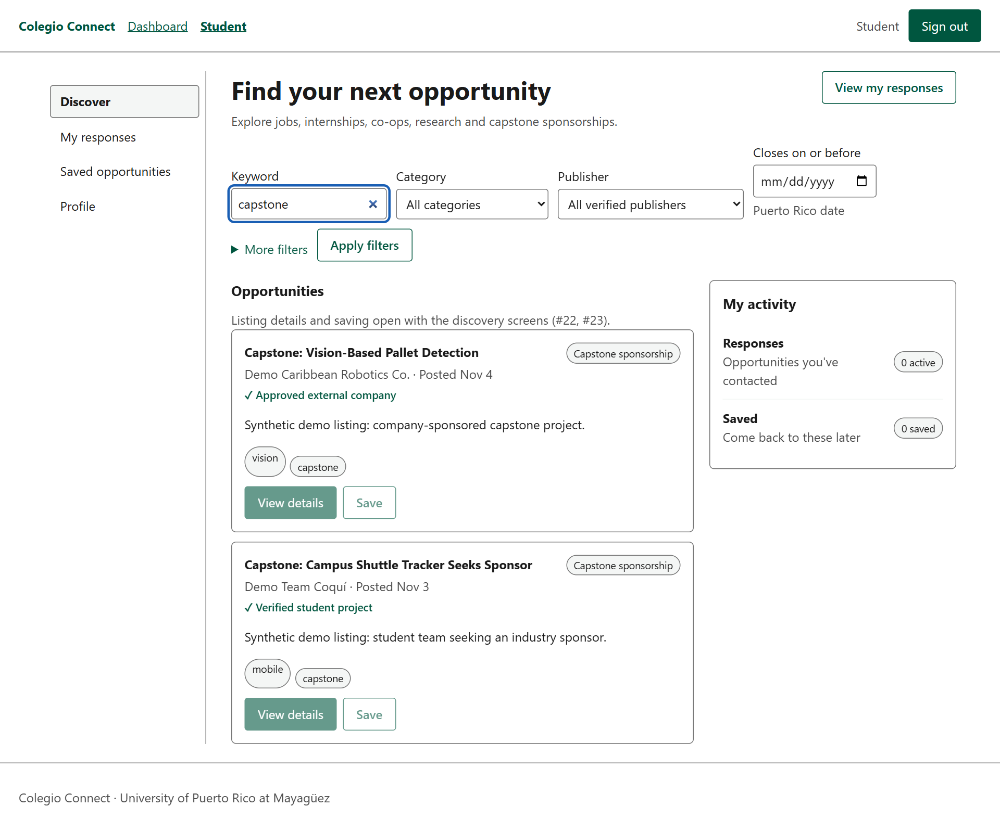
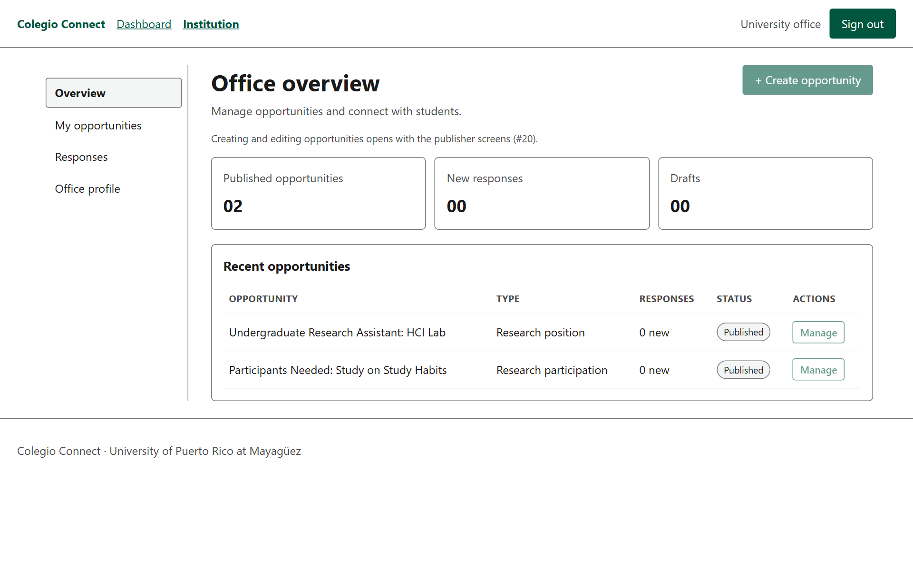
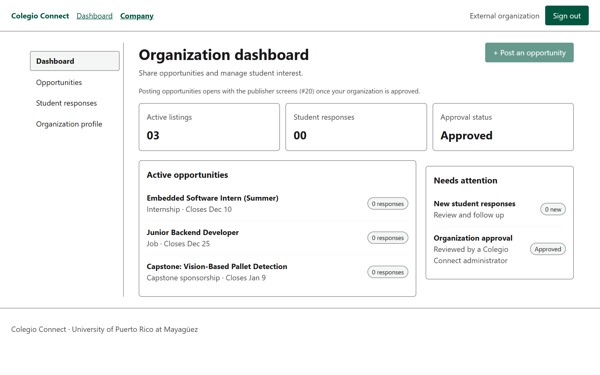
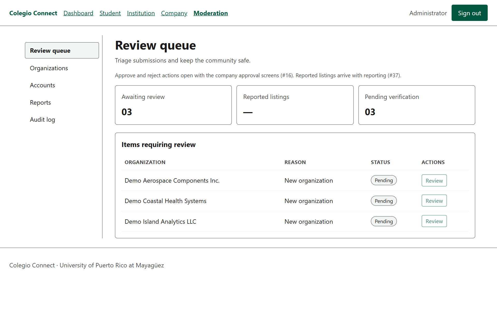
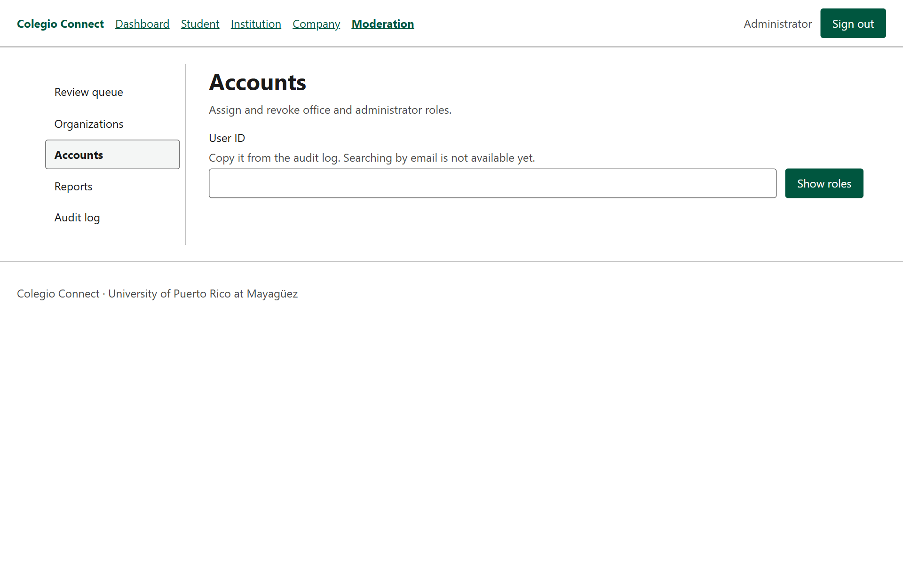
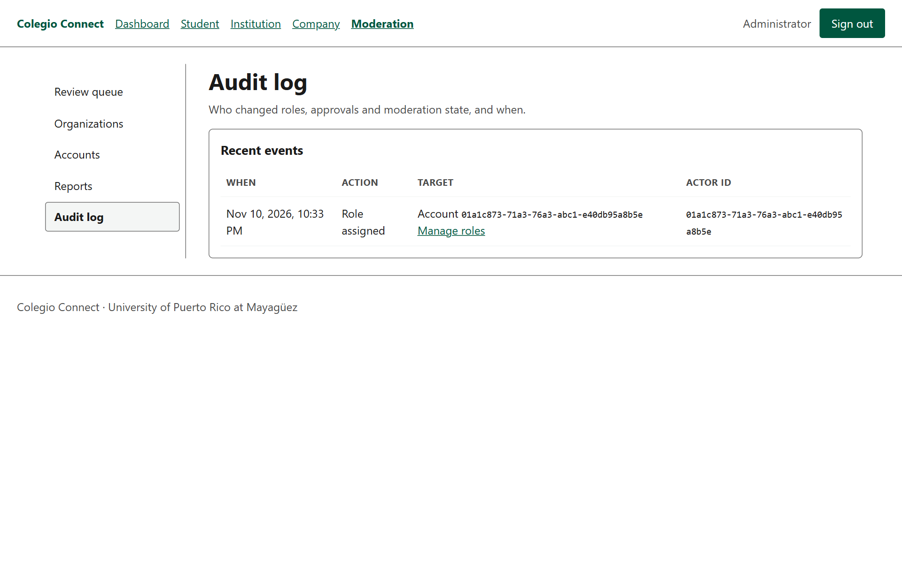
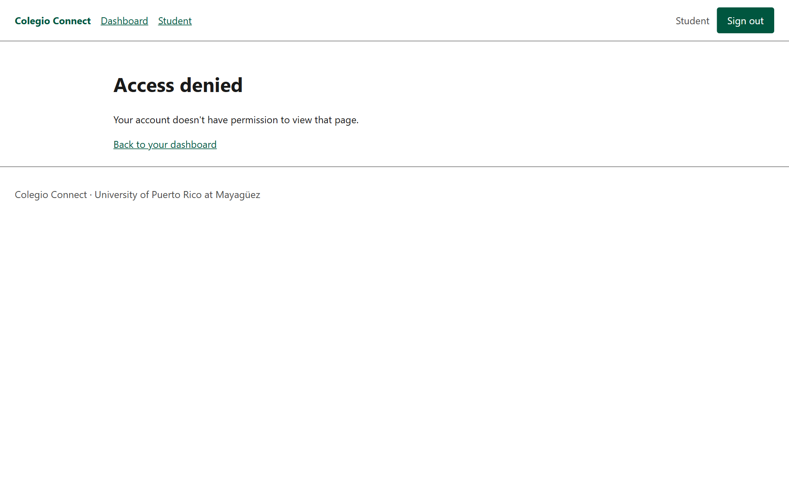
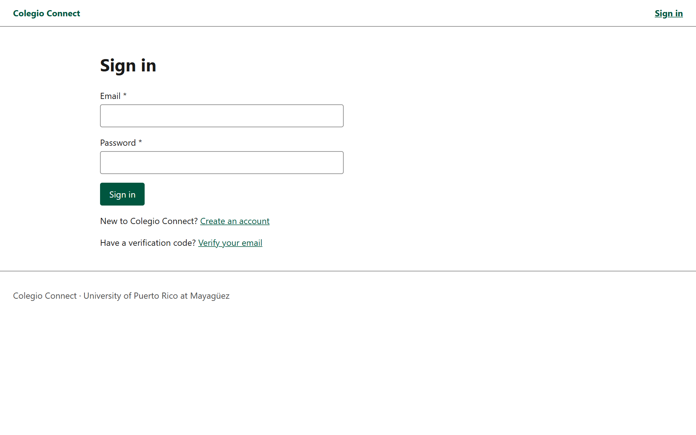
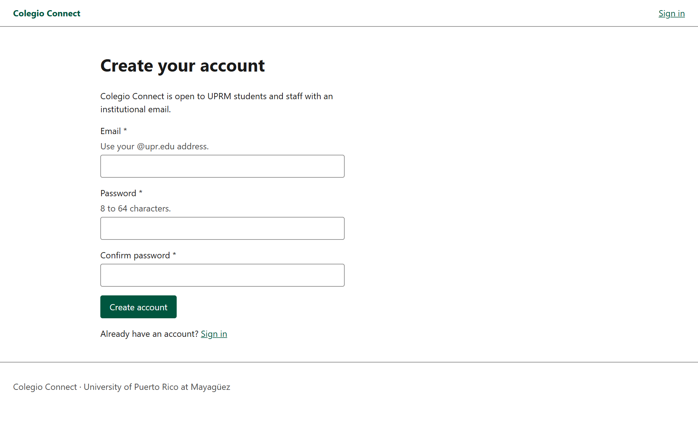

One trusted place for UPRM opportunities
Colegio Connect is a capstone prototype that brings jobs, internships, COOP positions, research openings, research participation and capstone sponsorships into one discovery experience for verified UPRM students.
The problem and our approach
Students find opportunities through separate offices, departments and outside sites, and offers shared outside official channels can be hard to trust. Colegio Connect combines six categories, verified publishers, privacy controls and moderation in one place.
Six opportunity categories
- Jobs
- Internships
- COOP
- Research positions
- Research participation
- Capstone sponsorship
Four roles
Student
Verified UPRM student who discovers, saves and responds to opportunities, sharing only the fields they choose.
University office or department
Publishes institutional opportunities under a verified UPRM label.
External company
Publishes only after a moderator approves the organization. Cannot browse students.
Moderator
Approves organizations, manages roles, acts on reports. Every action is recorded in an audit log.
Current build
Screenshots of the running application from the main branch, captured November 10, 2026. Select an image to view it full size.
The accounts, organizations and listings shown are synthetic demo data seeded into an isolated local database. Listing creation screens are not built yet, so demo listings were inserted directly.




















Milestone status
Progress against the four milestones in the approved proposal, as of November 10, 2026.
| Milestone | Status | Done | Next |
|---|---|---|---|
| M1 · Access foundation | Complete | Registration and email verification, sessions with CSRF and lockout, role-based authorization, sign-in screens, email notifications, role management with audit, CI pipeline | Hosting |
| M2 · Publishing and discovery | In progress | Listing data model; six-category discovery feed with filters and publisher trust rules; company approval backend; role dashboards | Listing creation, details and saving; company registration flow; load testing |
| M3 · Responses and moderation | Started | Audit log; moderator review queue; data model for responses and reports | Responses with field-level consent; reporting; approve/reject screens |
| M4 · Sponsorship and acceptance | Not started | — | Both sponsorship routes with contact release; security, accessibility and usability testing |
Architecture
A React single-page app talks to one Spring Boot API over REST with a session cookie and CSRF token. The API makes every authorization decision.
Design
Interactive wireframes for all four roles. Use the role buttons at the top of each page to switch screens. All content in them is placeholder.
- Low-fidelity sketches — layout only, hand-drawn style
- Core wireframes — sample copy and screen-intent notes
Team
Cristian J. Massini Pérez
Backend and data lead: identity, sessions, authorization policy, role management.
Luis A. Marrero Morales
Frontend and UX lead: React app, authentication screens, role dashboards, notifications, wireframes.
Gabriel E. E. Rodríguez Rodríguez
Infrastructure, security and moderation lead: CI, audit log, company review, dashboard APIs, recovery testing.
Documents and repository
- Progress report (November 2026)
- Approved project proposal
- Source code on GitHub — public repository